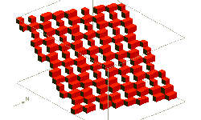
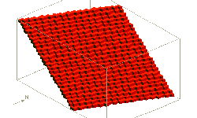
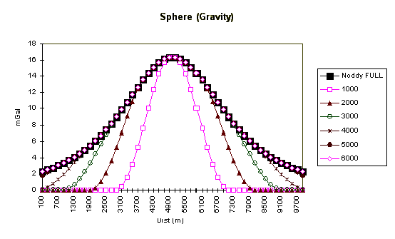
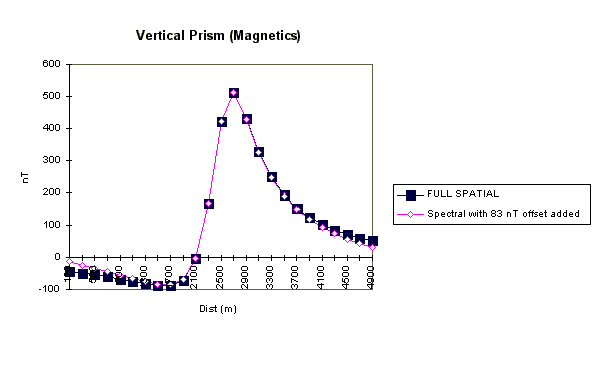

Geophysical modelling
Overview Geophysics Calculations Within Noddy
Recommended Calculation Schemes
This program allows you to calculate the 2D anomaly patterns which develop from the consideration of a 3D volume of geology. Once the volume of rock to be modelled has been specified from within the Block Options Window, the actual calculations for gravity and magnetics are performed simultaneously by selecting Calculate Anomalies from the Geophysics menu, and the anomalies themselves will be written out to file. A window will open up which allows the user to provide the directory and prefix of the output files to be created. The directories will be those below the level of the home location of the actual Noddy program. Once the calculation is completed, these files will be loaded into the program as raster or contour images, depending on the settings of the Geophysics Display Options Window.
Several schemes are currently available for calculating gravity and magnetic responses, which fall into two groups: the spatial domain and spectral domain schemes. To switch between these schemes select the appropriate option in the Geophysics Calculation Options Window, from the Edit Menu.
Geophysics Calculations within Noddy
There are three calculation schemes available within Noddy, which we shall call the Spatial Convolution scheme, the Full Spatial scheme, and the Spectral scheme, and each scheme has its advantages and disadvantages for particular settings, and not all calculation types are available for each scheme.
For all surveys the rock property of a cube is defined as the value at the centre of the cube, and for grid surveys (ie not arbitrary surveys or bore-hole surveys) the field strength is calculated at the X,Y location above the centre of each cube.
The Total Magnetic Intensity value calculated for all schemes is actually the value projected onto the Earth’s field, following the convention of many modelling schemes.
The gravity field calculated is the Z component only.
Basic Calculation Schemes
Spatial Convolution Scheme
This scheme works by calculating the summed response of all the cubes within a cylinder centred on the sensor, with a radius defined by the range term. The calculation for each cube is based on the analytical solution for a dipping prism presented by Hjelt 1972 & 1974. In order to calculate solutions near the edge of a block extra geology is calculated to produce a padding zone around the block equal in width to the range, so that there are no edge effects in this scheme. However this scheme will only provide exact solutions when the range is larger than the length of the model. For reasonably complex geology this limitation will not result in particularly inaccurate models, however for idealised geometries using a range that is too small will result in a kink in the profile, which is accentuated by 1VD calculations. The spatial convolution scheme is slower than the Spectral scheme for medium ranges (10-20 cube ranges), but generally much faster than the Full Spatial Calculation. As long as the range is greater than the spacing between high density/susceptibility features, the innaccuracies associated with truncating the calculation will probably not be evident. The draped survey and down-hole surveys have not been implemented for this scheme.
Spectral Scheme
This scheme works by transforming the rock property distributions into the Fourier domain, applying a transformed convolution, and then transforming this result back into the Spatial Domain. This calculation is performed for each horizontal slice through the geology, and the results are summed vertically. The Spectral scheme will produce a different result than the other two schemes in terms of absolute numbers for three reasons:
a) The Fourier transform implies that the geology is infinitely repeating outside the calculation area. This produces edge effects when high susceptibility or density bodies are found near the edges of the survey area. This effect can be lessened by the choice of a suitable padding around the block, including overspecifying the area of interest, however it cannot be totally removed.
b) The calculation loses the absolute base line of the gravity or magnetic field, so even when comparisons are made for well padded Spectral and large range Spatial models, an overall offset will be apparent between the two schemes. When trying to model real data this offset is not a problem as any regional will be removed before the modelling process.
c) There is a high frequency component to the calculated field that is of the same wavelength as the cube size and will be especially apparent when there are steep gradients in the values of the rock properties.
Occasionally for extremely regular geological models, such as NS trending sinusoidal folds, the spectral scheme will produce very surprising results, such as pruding markedly different anomaly amplitudes for identical fold structures.
Full Spatial Scheme
This is similar to the Spatial Convolution scheme except that all the cubes in the modelled are summed in order to calculate the response at any point. This calculation is effectively identical to the Mag3D program. It generally takes significantly longer to apply this calculation scheme than either of the other schemes. The only exception is when there is a relatively sparse geological model, in the extreme case where only one cube has non-zero values for both density and susceptibility, as any cubes which have both zero density and susceptibility are ignored. This is the only scheme that can accurately calculate draped surveys, down hole surveys and arbitrarily located airborne surveys.
Availability of specific calculations for each scheme
| Calculation | Spatial Convolution | Full Spatial | Spectral |
| Magnetics | YES | YES | YES |
| Gravity | YES | YES | YES |
| 3 Component Magnetics | NO | YES | YES |
| Remanence | YES | YES | YES |
| Anisotropy | YES | YES | YES |
| Draped Surveys | NO | YES | NO |
| Exact XYZ airborne | NO | YES | NO |
| Variable inclination | YES | NO | NO |
| Exact XYZ downhole | NO | YES | NO |
Advanced Calculations
Remanence Calculations
Remanence calculations have been implemented for all three schemes, and do not alter the calculation time.
Anisotropy of Susceptibility
Anisotropy calculations have been implemented for all three schemes, and do not alter the calculation time.
Barometric Surveys
Barometric Surveys have been implemented for all three schemes, and do not alter the calculation time. The survey height is assumed to be the sum of the height of the top of the block plus the altitude of the plane specified in the Geophysics Surveys Options. All cubes above the land surface are given zero densities and susceptibilities.
Draped Surveys
Draped surveys have only been implemented for the Full Spatial calculation, and thus take a considerable time to calculate. The survey height is assumed to be the height of the land surface plus the altitude of the plane. Finer cube sizes are obviously better able to preserve subtle variations in topography.
Component Surveys
3 Component calculations have been implemented for both the spectral and full spatial schemes.
Bore-hole calculations
These calculations are provided only for the Spectral and Full Spatial schemes, and do not as yet address the problem of the local distortion to the field caused by the borehole itself.
Variable Cube Size with Depth
This calculation can be used in conjunction with all three schemes to reduce the calculation time by increasing the cube size by a fixed factor below some threshold depth.
Arbitrarily Located Surveys
These surveys have been implemented for all three schemes, and can either be generated from within Noddy, or based on imported XYZ locations. Only the Full Spatial calculation will give precise values for the localities provided, the other two schemes both take the value of the nearest value calculated over the center of a cube.
Recommended calculation scheme for specific cases
| Calculation | Preferred Scheme | Reason |
| General Calculations | Spectral | Fastest scheme |
| Calculations where absolute numbers are required | Spatial Convolution | With reasonable range size, produces accuate numbers |
| Calculations which must be completely accurate | Full Spatial | Produces most accurate calculation |
| Models with high density/susceptibility features near edge | Spatial Convolution or Spectral padded out with extra geology | Extra padding slows down spectral scheme, so speed may be similar |
| Barometric Surveys | Spectral | Fastest scheme |
| Draped Surveys | Full Spatial | Produces most accurate calculation (cannot be performed with Spatial Convolution) |
| Borehole | Full Spatial | Produces most accurate calculation |
| 3 Component Surveys | Spectral | Fastest scheme |
| Arbitrarily Located Surveys | Full Spatial | Will calculate precise field values at locations provided |
| Surveys with varying inclination, declination or intensity | Spatial Convolution | Only scheme currently implemented |
Important Considerations when modelling
There are a number of factors which need to be taken into account when calculating the response of a particular structure:
1. Resolution of Structural Detail
In order to accurately model a particular geological model, it is essential to make sure that the cube size if fine enough to resolve the individual units which make up the model. This generally means that if the lithological units (of geophysical interest), are of a given thickness then the cube size needs to be at most the same as that thickness. Care needs to be taken since deformation can result in thinning of units (such as a fault cutting through a dyke obliquely). A second problem with using coarse cubed models is that the position of the anomaly can be displaced by up half the cube size, since the body is made up of cubes on a regular grid.
The true test of the correct choice of cube size may be made by setting the Geological Cube Size to the same value as the Geophysical Cube Size. Then make a Block Diagram with the only lithological units you wish to check made visible (by right mouse clicking in the block diagram). If the units look continuous in the resulting visualisation then the geophysical calculations will have the necessary detail. In the two figures below a 200 m thick dyke is represented with 400 m (left) and 200 m (right) cubes, with a significant loss of resolution seen in the coarser model.


Reducing the cube size significantly increases the calculation time, it is probably wise to develop the model using a larger cube size, so that the positioning of the structures can be performed quite quickly, and only to use a finer cube size for later stage geophysical calculations. To help in this process two separate cube sizes are defined, the Geological and Geophysical Cube sizes (Block Options Window). Geological calculations generally take are generally much quicker than geophysical ones, so that a finer value can be defined for the Geological Cube Size than for the Geophysical Cube Size.
2. Speed of Calculation
The speed of all calculations is a dependent on three factors:
a) Obviously the larger the volume or area of the calculation the longer the calculation will take. For a volume size, a reduction in the cube size of the calculation (for both geological and geophysical models) will quickly result in a blow out of the time needed. Again, performing low resolution calculations during the preliminary stages of the modelling process helps. Running Noddy in command-line (batch) mode also helps (to run Noddy in batch mode for the most common case (performing a geophysical anomaly calculation) simply type:
noddy -h test.his -anom -o test.mag
where test.his is the name of the previously set up history file, and test.mag is the output file name.
b) The type of calculation
Some calculations inherently take longer than others, for example a deformable remanence calculation will take longer than a non-deformable remanence calculation.
c) The choice of geophysical calculation scheme
- The three different calculation schemes all take different times to perform the same calculation, typically the slowest is the full and the fastest is the spectral, with the spatial convolution in-between, however there are exceptions. Within each calculation scheme there are different options that speed up the calculation:
- Spectral Scheme. The Spectral scheme works more slowly with the Reflective Padding Option set, so unless there is a need for this scheme related to the boundary conditions of the model, it is better to use, for example the Ramp padding Options.
- Spatial Convolution Scheme. The larger the Spatial Range, the more accurate the calculation, however the Spatial Range term in the Spatial scheme controls the calculation time and it is proportional to the range squared, so smaller ranges can be used early in the modelling processes.

Full Spatial Scheme. The Full Spatial scheme only calculates the contributions of cubes whose density or susceptibility values are none zero, so if both are set to zero, and the model only contains one or two units with non-zero rock properties, the calculation time can be quite reasonable.
3. Absolute Anomaly Intensities
The absolute intensities of the an anomaly are not preserved by the Spectral calculations, although the shape is preserved, so that when comparing Noddy calculations with other modelling schemes an offset may need to be applied in for this scheme. Another reason for variation between Noddy and other schemes is that the bodies defined are only approximated by the cubes, so that the true volume of a 1000 m radius sphere modelled by 200 m cubes is only 95% of the Noddy model version, so that the anomaly calculated in Noddy will be approximately 5% larger than an analytical solution. Finally Noddy does not take into account self-demagentisation so again the Noddy anomaly will be slightly stronger.

The shape of anomalies calculated by Noddy will be correct with two conditions:
- For Spatial Convolution calculations, the anomaly due to a single body will only be correct up to the distance defined by the Range
- For Spectral Calculations, there is a spurious high frequency component that is particularly evident adjacent to high contrasts in rock properties.
5. Boundary Effects
Since calculated anomaly for a model cannot take into account the geology of bodies outside the model bounds, so that highly responsive bodies which intersect the edges of a model can result in edge effects. These effects can be reduced for both Spatial calculations by using a large range term, which will calculate "extra" geology around the model bounds up to the Range distance. For the Spectral scheme care has to be taken with bodies near the edge of the model, as the different padding options have quite different results. In the image below, which shoes the arithmetic difference between a full spatial and a spectral magnetics calculation, notice the increased variation near the boundaries.

In this section
Noddy · open source under the MIT licence · Loop3D/noddy_qt